Wprowadzenie do GIT
Krzysztof Morcinek i Tomasz Skraskowski
Dev Warsztaty
Katowice - 12 stycznia 2019
Poprzednie edycje:
Wrocław - 19 maja 2018
inspiracja - github.com/SkillsTemple/git-devWarsztaty
Konfiguracja środowiska
Trzy poziomy konfiguracji
-
--system(brany pod uwagę na końcu)- Linux:
/etc/gitconfig - Windows:
%ProgramFiles(x86)%\Git\etc\gitconfig - Windows:
%ProgramFiles%\Git\mingw64\etc\gitconfig
- Linux:
-
--global(brany pod uwagę w drugiej kolejności)- Linux:
~/.gitconfig - Windows:
%USERPROFILE%\.gitconfig
- Linux:
-
--local(brany pod uwagę w pierwszej kolejności).git/config
Modyfikowanie konfiguracji
-
git config --POZIOM SEKCJA.NAZWA "TREŚĆ"- Np.
git config --global user.name "John Doe"
- Np.
-
git config --POZIOM --edit- Np.
git config --global -e
- Np.
Odczytywanie konfiguracji
-
W edytorze tekstowym:
git config (--POZIOM) --edit- Np.
git config --global -e
- Np.
-
Konkretny wpis:
git config (--POZIOM) SEKCJA.NAZWA- Np.
git config --get user.email
- Np.
-
Listowanie wpisów:
git config (--POZIOM) --list- Np.
git config --list
- Np.
Bez podania poziomu, git przyjmuje obecnie brany pod uwagę poziom.
Różne edytory tekstowe
- vim
git config --global core.editor vim - Linux Mint - xed
git config --global core.editor xed - Ubuntu - gedit
git config --global core.editor gedit - Windows - notepad
git config --global core.editor - Windows - notepad++
git config --global core.editor "'C:/Program Files/Notepad++/notepad++.exe' -multiInst -notabbar -nosession -noPlugin" - Windows - Visual Studio Code
git config --global core.editor "'C:\Program Files\Microsoft VS Code\code.exe' -n -w"
Przykładowa konfiguracja
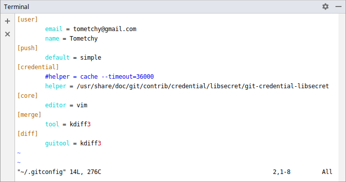Working directory,staging area, commit
Twoje pliki - absolutnie każdy plik który utworzysz/edytujesz/usuniesz,
zawsze jest w którymś z 3 "obszarów" gita
- obszarze roboczym (working directory)
- 'indeksie' (staged files)
- repozytorium (commicie dodanym do historii)
Obszar roboczy
Obszar roboczy (working directory) to obszar w którym jest praca którą wykonałeś, ale o której jeszcze nie powiedziałeś nic gitowi
- nowe pliki których wcześniej nie commitowałeś
- zmiany w plikach które wcześniej commitowałeś
- zmiana nazwy pliku lub jego usunięcie
Git nie wie nic o Twojej pracy w working directory, uważaj żeby jej nie stracić dopóki mu o niej nie powiesz
Zmiany w working directory odnoszą się do staging area, a jeśli danego pliku nie ma w staging area, wówczas bezpośrednio do obecnej wersji w lokalnym repozytorium
Index (staged files)
Staging area to obszar w którym przygotowujesz sobie które zmiany zostaną zaccomitowane, czyli doddane do Twojego lokalnego repozytoriumPo zastagowaniu zmiany, czyli przygotowaniu jej do commita, dalej można plik edytować, wówczas zmiany w working directory pokazywane są względem zastagowanej wersji
Co więcej, od razu można wybrać żeby zastagować tylko część zmian Dla przykładu na dole pliku zaczęliśmy dopisywać nowy kod, a w środku pliku zobaczyliśmy literówkę w tekście. Wówczas można od razu nieprzerywając pracy na dole pliku, zastagować jedynie poprawienie literówki i dodać commita "Fix typo in module A".
Commit
Ukazanie różnicy pomiędzy ostatnią wersją, a jednocześnie snapshot wszystkich plików w projekcie, posiadający identyfikator SHA-1.

Flow

Przykład stagowania (git add)
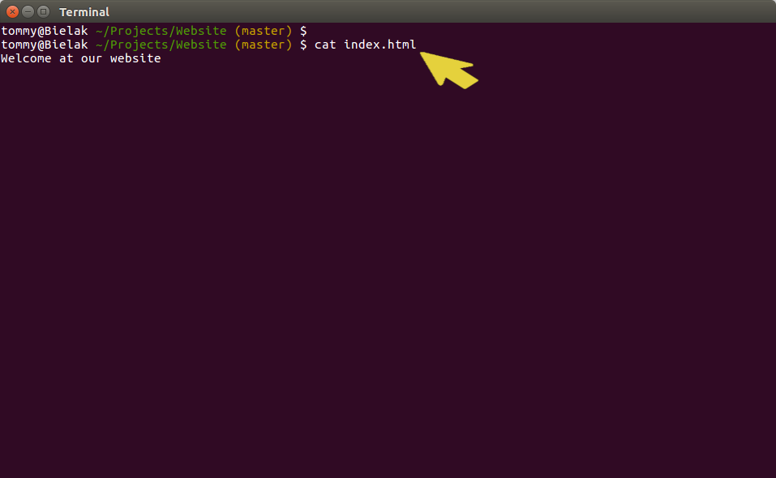Przykład stagowania (git add)
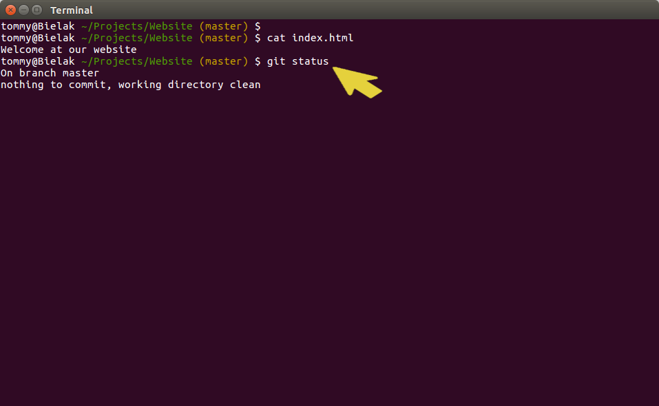Przykład stagowania (git add)
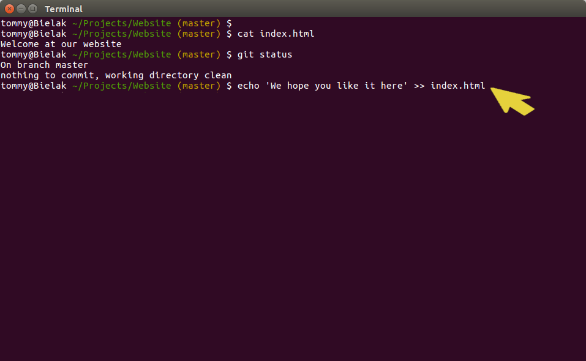Przykład stagowania (git add)
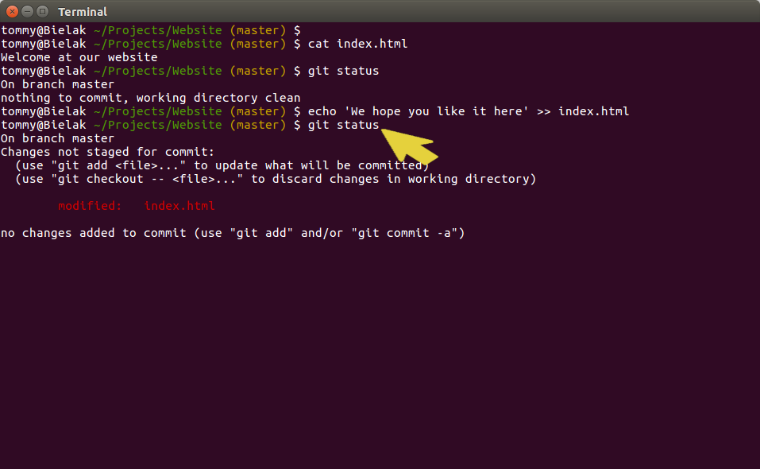Przykład stagowania (git add)
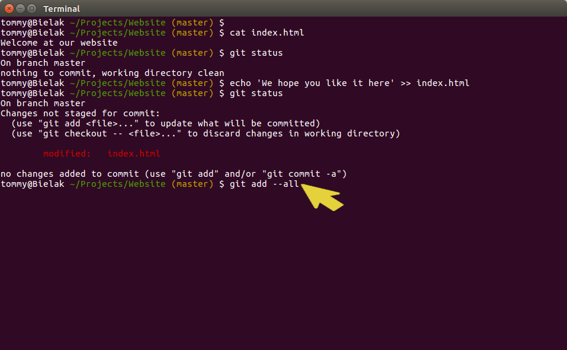Przykład stagowania (git add)
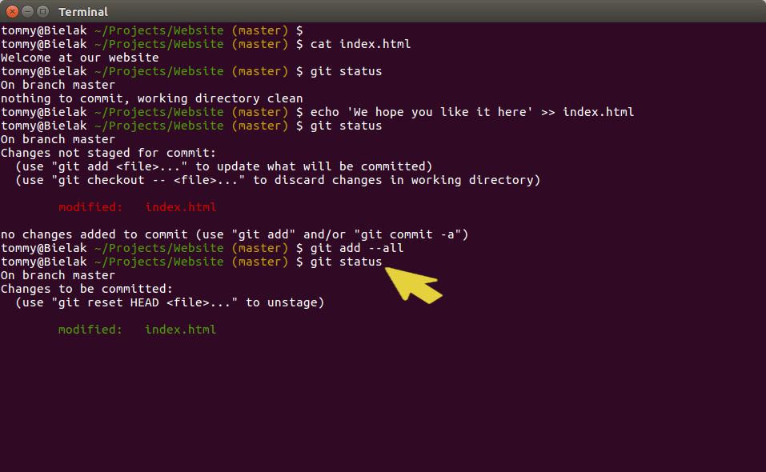Przykład stagowania (git add)
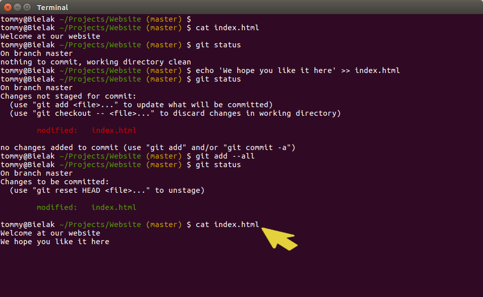Przykład stagowania (git add)
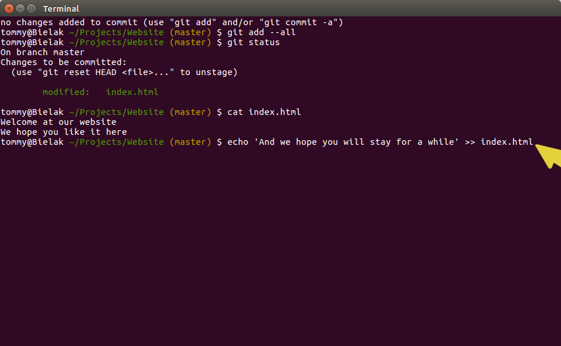Przykład stagowania (git add)
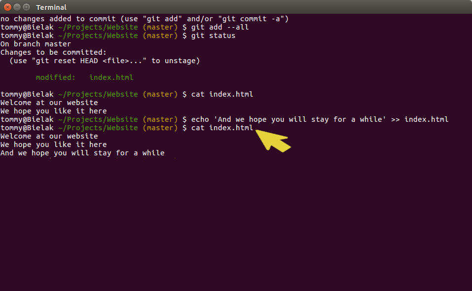Przykład stagowania (git add)
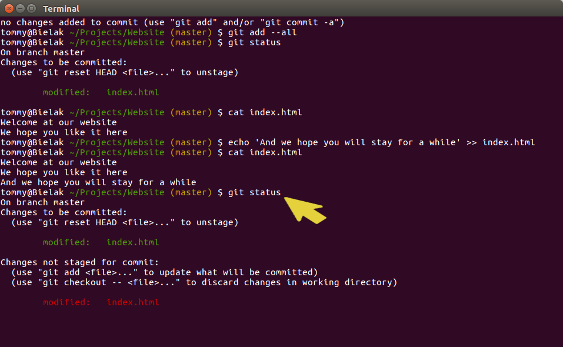Przykład stagowania (git add)

Przykład stagowania (git add)
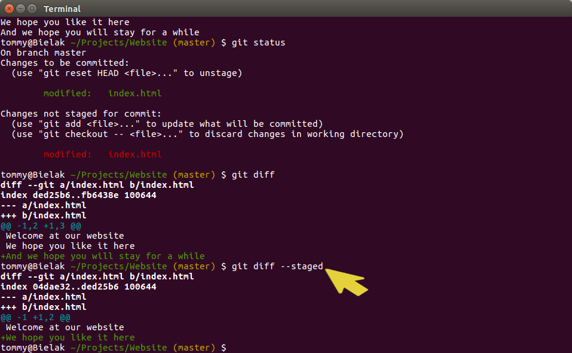Przykładowe flow
- Demo - pokazywanie statusu w SourceTree
-
SourceTree - popularne, darmowe narzędzie.
W czasie warsztatów czasem będzie wykorzystane do zaprezentowania efektów.
Ćwiczenie
- Utwórz na pulpicie katalogi
cwiczenia/cars-demo
cd ~/Desktop
mkdir cwiczenia
cd cwiczenia
mkdir cars-demo
cd cars-demo - Utwórz repozytorium (
git init) - Stwórz plik index.txt z zawartością "Hello World"
- Dodaj plik do repozytorium (
git add, git commit) - Zmień treść pliku na "Witaj świecie"
- ...
cd Ćwiczenie
- Sprawdź status repozytorium (
git status) - Dodaj plik do repozytorium (
git add, git commit) - Dodaj do pliku kolejną linijkę "jest git"
- Stwrórz nowy plik cars.json i wpisz "toyota"
- Sprawdź status repozytorium (
git status) - Dodaj plik cars.json do repozytorium
(git add cars.json, git commit) - Sprawdź status repozytorium (
git status) - ...
cd Ćwiczenie
- "Skomituj" plik index.txt
- Usuń plik
cars.json - Sprawdź status repozytorium (
git status) - "Skomituj" usunięcie pliku
- Sprawdź status repozytorium (
git status)
Git to w zasadzie baza danych
Git to VCS na który można patrzeć, jak na rozproszoną bazę danych, opartą na streamie snapshotów plikow


Jak działa git
Git w podstawowym scenariuszu jedynie dodaje kolejne snapshoty plików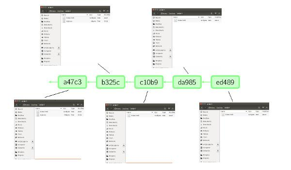


Wiedząc jaka jest wersja na produkcji, zawsze można wrócić do niej w kodzie i zrobić drobną poprawkę bez wprowadzania na produkcję kolejnych commitów.
W przeciwieństwie do kryptowalut...
w swojej 'instacji bazy' (na swoim komputerze) możesz zmieniać istniejące snapshoty (commity)
ALE!
tylko pod warunkiem, że jeszcze ich nie opublikowałeś innym bazom
Git nie śledzi plików
W przeciwieństwie do niektórych VCS,
git nie śledzi plików, wyłącznie ich zawartość

Head
HEAD to referencja do obecnie zcheckoutowanego commita, zazwyczaj będącego ostatnim commitem w branchu
- HEAD - ostatni commit (pierwszy od końca) - np. ed8ab42[...]
- HEAD~1 - przedostatni commit - np. daa6b92[...]
- HEAD^ - przedostatni commit - np. a6bc32b[...]
- HEAD~3 - czwarty od końca commit - np. 7cb16f7[...]
- HEAD^^^ - czwarty od końca commit - np. 343ebb3[...]
Przeglądanie historii
git loggitk
Git log oraz gitk domyślnie pokazują historię od obecnego momentu - HEAD, ale możliwe jest wskazanie dowolnego momentu w historii, np. nazwy brancha, SHA commita lub odniesienia HEAD^ lub HEAD~N
Popularne przełączniki do git log / gitk
git log -4git log --onelinegit log --graphgit log --decorategit log --statgit log --patchgit log --since=X,git log --after=X,git log --before=Xgit log X --not Y,git log Y..X,git log X...Ygit log --author="xyz"git log --grep="xyz"git log --no-mergesgit log --allgit log --pretty="FORMAT"
git log z grafem

git log z jednoliniowymi wynikami

git log z pokazaną statystyką i diffem

gitk

Przygotowanie do ćwiczeń z przeglądaniem historii
-
Przejdź do katalogu cwiczen na pulpicie:
cd ~/Desktop/cwiczenia - Sklonuj przykładowe repozytorium (z projektem open source), do katalogu
log-demo:
git clone https://gitlab.com/terrakok/gitlab-client log-demo -
Przejdź do katalogu repo:
cd log-demo -
Zresetuj repozytorium do wersji: 7ad14ecda2f97a3ff7c3cca44cc7605484b578b5
git reset --hard 7ad14
Żeby każdy miał tę samą wersję do ćwiczeń
Ćwiczenie 1
Sprawdź datę ostatniego commita
Wizualnie:
gitk
Z konsoli:
git log -1
Odpowiedź:
Fri Dec 14 00:39:27 2018 +0300
Ćwiczenie 2
Sprawdź datę przed ostatniego commita
Wizualnie:
gitk
Z konsoli:
git log -2lub
git log HEAD^ -1
Odpowiedź:
Thu Dec 13 23:58:11 2018 +0300
Ćwiczenie 3
Sprawdź SHA ostatnich 5 commitów, wyłączając commity mergujące
Wizualnie:
gitk
Z konsoli:
git log -5 --oneline --no-mergesOdpowiedź:
7ad14ec (HEAD -> develop) Fix restore app after process death.
a858b81 Add close scope logic. Delete empty flow presenters.
faf172e Update gradle version.
3fe543e fix tab gravity in merge request fragment
158bba8 Delete unused "todo".
Ćwiczenie 4
Sprawdź jakie commity są lokalnie na branchu develop, a których nie ma na branchu develop na serwerze
Wizualnie:
gitk develop --not origin/developlub
gitk origin/develop..develop
Z konsoli:
git log develop --not origin/developlub
git log origin/develop..develop
Odpowiedź:
Nie ma takich
Ćwiczenie 5
Sprawdź jakie commity są na serwerze na branchu develop, a których nie ma na branchu develop lokalnie
Wizualnie:
gitk origin/develop --not developlub
gitk develop..origin/develop
Z konsoli:
git log origin/develop --not developlub
git log develop..origin/develop
Odpowiedź:
To zależy od momentu zrobienia git fetch i pracowitości autorów :)
Ćwiczenie 6
Sprawdź jakie commity na branchu develop są tylko lokalnie lub tylko na serwerze
Wizualnie:
gitk develop...origin/develop
Z konsoli:
git log develop...origin/develop --decorate
Odpowiedź:
To zależy od momentu zrobienia git fetch i pracowitości autorów :)
Ćwiczenie 7
Sprawdź tytuł ostatniego commita autora z nazwiskiem Gulya
Wizualnie:
gitk --author=gulya
Z konsoli:
git log -1 --author=gulya
Odpowiedź:
Upgrade Markwon to version 2.0.0. Replace ImageSizeResolver workaround with upstream one.
Ćwiczenie 8
Sprawdź autora commita zawierającego w opisie frazę Update Stub z brancha develop na serwerze
Wizualnie:
gitk --all --grep="Update Stub"lub
gitk origin/develop --grep="Update Stub"
Z konsoli:
git log --all --grep="Update Stub"lub
git log origin/develop --grep="Update Stub"
Odpowiedź:
terrakok
Ćwiczenie 9
Sprawdź jakie pliki modyfikował commit b9272a3be3d4f9182e6893a0f9a2f7b9ff0b6923
Wizualnie:
gitk b927
Z konsoli:
git log b927 -1 --stat
Odpowiedź:
.../model/repository/session/SessionRepository.kt | 9 +++++++++
.../terrakok/gitlabclient/presentation/auth/AuthPresenter.kt | 12 ++++++------
Ćwiczenie 10
Sprawdź dokładnie co zmienił commit 0e02008383a59f6ab56a14df4688070aab925765
Wizualnie:
gitk 0e020 -1
Z konsoli:
git log 0e020 -1 -plub
git log 0e020 -1 --patch
Odpowiedź:
Linie dodane do pliku PrivacyPolicyFragment.kt:
override val parentScopeName = DI.APP_SCOPE
pusta
Toothpick.inject(this, scope)
Linia usunięta z pliku PrivacyPolicyFragment.kt:
Toothpick.inject(this, Toothpick.openScope(DI.APP_SCOPE))
Ćwiczenie 11
Sprawdź id commitów z drugiego grudnia 2018
Wizualnie:
gitk --after="2018-12-02 00:01" --before="2018-12-02 23:59"
Z konsoli:
git log --after="2018-12-02 00:01" --before="2018-12-02 23:59"
Odpowiedź:
6167018 Merge branch 'task/upgrade-markwon-and-remove-image-loading-crutch' into 'develop'
fdb2e6c Merge branch 'project_milestone_tab' into 'develop'
158bba8 Delete unused "todo".
6d45888 Add account id for fixing same userId for difference servers.
0e02008 Fix scope for PrivacyPolicyFragment.
c46c806 Merge branch 'feture/multi_account' into develop
45c0836 Delete code style from git history.
5752be0 Add scopes to each fragment for more powerful memory management.
Ćwiczenie 12
Sprawdź co zmergował(czyli jakich ma parentów) commit 6167018c5c893e99b7e12d89cfc930875dae3897
Wizualnie:
gitk 6167
Z konsoli:
git log 6167 -3 --graph
Odpowiedź:
a548222 Upgrade Markwon to version 2.0.0. Replace ImageSizeResolver workaround with upstream one.
fdb2e6c Merge branch 'project_milestone_tab' into 'develop'
gitk pokazujący cały stan projektu
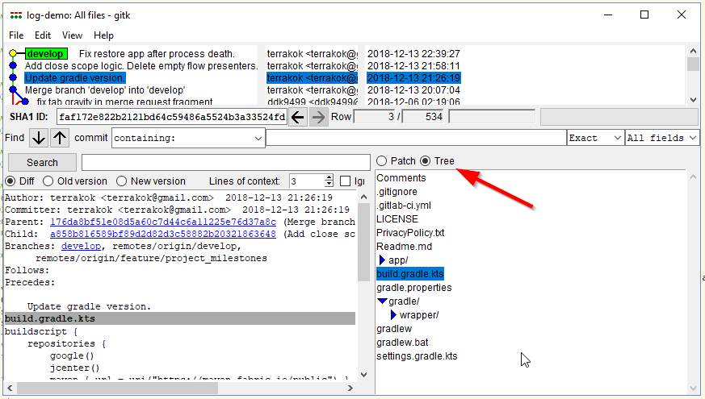
Przejrzeć drzewo można również w konsoli, ale to się przydaje głównie do skryptów git ls-tree -r 0e020 --name-only
Edytowanie istniejących zmian
- Przed opublikowaniem innym
- Po opublikowaniu innym
Edycja 'ostatnich' commitów przed opublikowaniem
- git reset
- git reset --mixed
- git reset --soft
- git reset --hard
- commit --amend
- rebase --interactive
Edycja 'ostatnich' commitów po opublikowaniu
git revertnp:
- git revert HEAD
- git revert HEAD~4
- git revert 6e5av3a
Demo rebase --interactive
- git rebase --interactive HEAD~4
- git rebase -i develop
Ćwiczenie 1 (opis w repo)
git rebase --interactive
Ćwiczenie 2 - 'zabawa' z resetowaniem commitów i obserwacja 'co się dzieje'
git reset --soft/mixed/hard HEAD~LICZBA_COMMITÓW
Branche

cherry-pick
Commity między branchami można przekładać

Demo
ToDo - wizualizator learing branches
Merge

Rebase

Merge vs rebase

- Ćwiczenie pierwsze - zrób merge lub rebase
- Ćwiczenie drugie - rozwiąż konflikty
Rebase to świetne narzędzie...
Rebase to świetne narzędzie, poprawianie czytelności historii bardzo ułatatwia przeglądanie repozytorium.
Ale trzeba być ostrożnym. Czasami warto przerwać rebasowanie i jednak zrobić zwykłego merge.
link do fajnego artykułu tłumaczącego trudności które można napotkać
- rebase zakłamauje historię (z dobrą intencją, ale jednak)
- rebase może wywołać konflikty których by nie było przy mergu
- a w związku z tym, może wprowadzić błąd na produkcję
- pomijając, że to dokłada dodatkowej roboty
Dlaczego GIT jest git
- jest szybki
- jest rozproszony
- ułatwia rozwiązywanie konfliktów
- wspiera nieliniowy development (branche)
- działa offline
- pozwala na pracę nad jakością commitów
- bardzo łatwy do użytku domowego
- jest bezpieczny
Jest bezpieczny - jest wiarygodny
Suma kontrolna każdego commita opiera się na
- Zawartości i nazwach wszystkich plików
- ID parent commit(ów)
- Wiadomości (opisie) commita
- Autorze i/lub commiterze
(np. po uszkodzeniu dysku albo próbie sabotażu)
Analogicznie wiarygodne są przelewy w bitcoin
Pushowanie
&
pullowanie zmian
Synchronizacja repozytoriów (np. lokalnego z wersją na GitHubie) odbywa się za pomocą 'wypychania' i 'ciągnięcia' commitów
- git push
-
git pull
- git fetch
- git merge
Pull z rebase
Często dobrą opcją jest zastosowanie komendy która od razu za nas zrebasuje commity
git pull --rebase
Push --force
Jeżeli jesteś pewny co robisz, możesz wymusić pushagit push --force
Ale jak już wymuszasz, to zawsze z zabezpieczeniem
git push --force-with-lease
Ignorowanie plików
Ścieżki do plików/katalogów które chcemy ignorować dla repozytorium, trzymamy w pliku .gitignore
Plik ten wersjonujemy w repozytorium
Przykładowe reguły ignorowania
- *.orig
- **/[Pp]ackages/*
- bin/
Dodaję regułę do .gitignore, a "git status" dalej pokazuje zmiany
Jest to scenariusz na który każdy prędzej czy później się natknie
Powód jest prosty - plik już jest w repozytorium,
.gitignore ignoruje tylko nie śledzone pliki
Wystarczy plik... usunąć z repozytorium
Usuwanie pliku z repozytorium, żeby "posłuchał" reguł .gitignore
-
Tradycyjnie:
usunięcie pliku -> git add -> git commit -
Za pmocą komendy:
git rm file1.txt
git commit -m "remove file1.txt" -
Zostawiając plik na dysku:
git rm --cached file1.txt
git commit -m "remove file1.txt"
Gotowe reguyły .gitignore
- www.gitignore.io
- checkbox przy tworzniu nowego projektu
7 zasad dobrego commit message
- Oddziel tytuł od ciała pustą linią
- Ogranicz tytuł do 50 znaków
- Stosuj wielkie litery w tytule
- Nie kończ tytułu commita kropką
- Zapisuj tytuł w trybie rozkazującym
- Ogranicz 'szerokość' ciała do 72 znaków
- W ciele opisz co i dlaczego, a nie jak
https://chris.beams.io/posts/git-commit/
git reflog

schowek
git stashgit stash --include-untrackedgit stash listgit stash apply (optional: name)git stash pop (optional: name)git stash drop (optional: name)- Różne wariacje, zachowywanie indexu, nadawnie wiadomości itd.
Uwaga
Łatwo zapomnieć o nieśledzonych plikach
Tagi
Lekkie(lightweight) - tylko wskaźnik z nazwą
git tag v1.4
Opisane(annotated) - posiadają opis, sumę kontrolną, autora, datę itd.
git tag -a v1.4 -m 'my version 1.4'
Pushowanie tagów
Fetch pobiera wszystkie tagi z serwera, ale domyślnie tagi się nie wypushowują
Dwa sposoby pushowania tagów
- Zalecany:
git push origin tag_name - Silnie odradzany:
git push --tags
Forki & Pull requesty

Pytania? - Pull requesty!
Przydatne narzędzia związane z gitem
- GitHub Pages / GitLab Pages / Netlify
- Np. prezentacja na którą właśnie patrzymy
- GitHub gist
Credentials helper
Każdy push, fetch (czyli również pull), wymaga autoryzacji...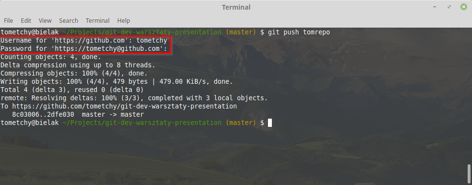
Wbudowane credentials helpery
ToDoWygodny i bezpieczny credentials helper dla Linux Mint i Ubuntu
ToDoWygodny i bezpieczny credentials helper dla Windows
Instalator: github.com/Microsoft/Git-Credential-Manager-for-Windows/releases
Lub checkbox w trakcie instalacji gita: 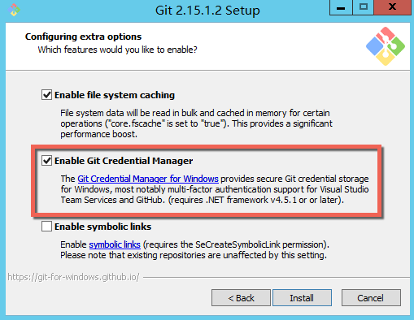
Powinno ustawić: git config --global credential.helper manager
Linki
- Pro Git book (Scott Chacon, Ben Straub)
- How to Write a Git Commit Message (The seven rules of a great Git commit message)
- Atlassian Tutorials
- Learn git branching
- Visualise git with D3
- Successful git branching model - Git flow
- Oh shit, git!
- Git cheatsheet
- How to undo (almost) anything with git
- GIT Illustrated Cheatsheet
- Artykuł na co uważać przy rebase
Dziękujemy!